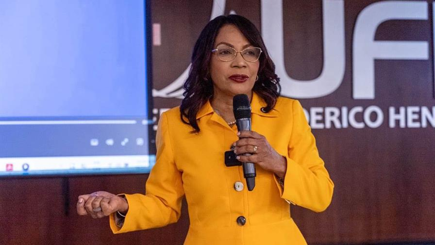

El Minerd promete ampliar el acceso a 20 mil estudiantes con discapacidad.
22 de octubre, 2025

La directora de Educación Especial afirma que se ha pasado de nueve centros piloto a un plan de escala de 100 centros inclusivos.
El Ministerio de Educación (Minerd) informó hoy que ampliará su modelo educativo inclusivo para garantizar el acceso y la permanencia a más de 20 mil estudiantes con discapacidad o altas capacidades intelectuales en el sistema educativo nacional.
La directora de Educación Especial, Lucía Vásquez Espínola, explicó que se ha pasado de nueve centros piloto a un plan de escala de 100 centros inclusivos, además de que hoy se tienen 117 aulas específicas en escuelas regulares.
En una comunicación de prensa Vásquez Espínola explica que la iniciativa forma parte del plan institucional para consolidar una educación inclusiva, equitativa y de calidad, conforme a lo establecido en la Constitución y la Ley General de Educación No. 66-97, tal como lo establece la Ordenanza 05-2024.